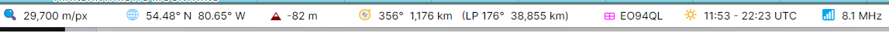

Status Bar
The status bar at the bottom of the main window describes the point under the mouse, on either map:

- 🔍 Map scale - the scale of the map under the mouse, in metres or feet per pixel. While the mouse is off the maps, the scale of the map you last clicked;
- 🌐 Latitude and longitude of the point;
- ▲ Elevation - the height of the ground or the ice above sea level at the point, or the depth of the sea there as a negative number. It is an average over about 15 km, so a summit reads lower than its true height, and a point near the coast reads between the land and the sea;
- 🧭 Azimuth and distance from home - the bearing and the distance from your home location to the point along the great circle, then, after LP, the same along the long path: the opposite bearing and the rest of the great circle around the Earth;
- ⊞ Grid square - the 6-character Maidenhead locator of the point;
- 🔆 Sunrise and sunset at the point, in UTC or local time as the UTC and Local switch of the Clock panel selects, on the day the panel shows, or polar day or polar night where the sun does not rise or set that day;
- 📶 Map reading - with the Amateur Radio functions on, the value of the ionospheric or propagation map at the point; see Ionospheric Maps.
Hover the mouse over a value to see what it is. The distances, the elevation and the map scale are shown in the units chosen in the Units section of the Settings Dialog: kilometres and metres, miles and feet, or nautical miles and feet.